建築特色
二百多年前，先民渡海來台，帶入中國及閩南獨特的宗教信仰和建築形式，也發展了特有的寺廟裝飾之美，更綜合了藝術、民俗宗教、社會形態的文化意義，也豐富了住民生活的内容。台灣光復後，各廟宇大多改建成鋼筋水泥，斗拱等也採用了北方建築形式。寺廟裝飾或横造的配置都有傳統的尊卑之分，主殿都較高，大都採「歇山式」，規模較大的採「重簷」建築。道教廟宇與佛寺的建築型式不同，閩南廟宇的建築裝飾，蘊藏了數之不盡、看之不絕的民間工藝與美術，也傳遞著昔日的原始信仰、神話傳說、文學篇章或歷史典故。不但具有裝飾之美外，也藉著「諧音」、「隱喻」表達心靈深處的理想與願望：也從各種神明及動植物圖案中，表現出「趨吉避凶、祈祥納福」的意義，更表現出教化忠孝節義、稜善有餘慶的文化思想。今天要與您欣賞寺廟裝飾之美，從門神、窗、雀替、瓜筒、通樑、斗拱、樑枋、天花板、看堵、柱上都有裝飾物，有動物類、植物類、人物類和什物類，有抽像變形，也有寫實；有單獨模樣、也有違綿不斷環環相扣的，種類繁多，不勝枚舉，整座廟宇就像是一個民間藝術博物館。
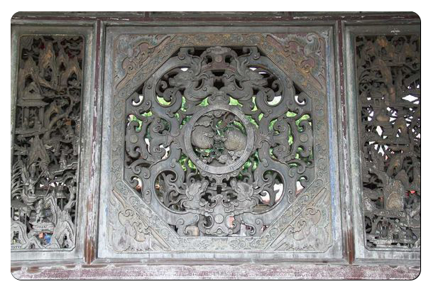 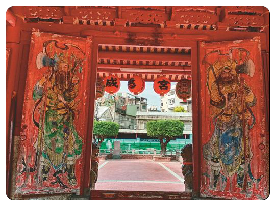門神
門神是中國住宅和佛教道教寺廟大門處的神像，亦見於臺灣、朝鮮、日本、越南 ，主要貼在大門或後門，佛教道教寺廟也會在山門處設有門神塑像。門神是木版年畫的主要題材之一。通常為威武之神祇可能成為門神早期的門神是以桃木雕塑而成，並且將其懸掛於門上。古代的門戶大都是雙門為主，所以門神的懸掛或是張貼大都是以雙數為主。相傳，早期的兩尊門神分別是神荼與鬱壘，據說這兩尊神明是由玉皇上帝指派的守門侍者，他們將害人或是騷擾百姓的魑魅魍魎收服後，丟到深山中讓猛獸啃食，於是每當鬼怪看到這兩尊守門神後，便都望風而逃，並且不敢騷擾或是禍害百姓。隨著時代的前進，皇宮、寺廟和民宅開始將有名的文臣武將尊奉為門神，像是秦瓊與敬德、蕭何與曹參，還有關羽與張飛等等。門神的歷史很久，其前身是「桃符」，又稱「桃板」。古代人認為桃木乃是五木（桑、榆、桃、槐、柳）之精，能辟鬼邪，故從漢朝時就有用桃木做闢邪之具。有的在桃木上刻上吉利文字，有的則刻上圖形，分別形成春貼與年畫。隨著紙的廣泛應用，桃木逐漸被紙所代替。到後來有人把神荼和鬱壘繪在年畫上，貼於門上，形成了門神。
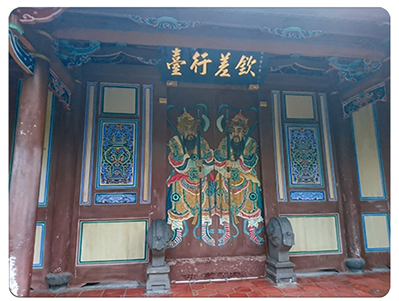 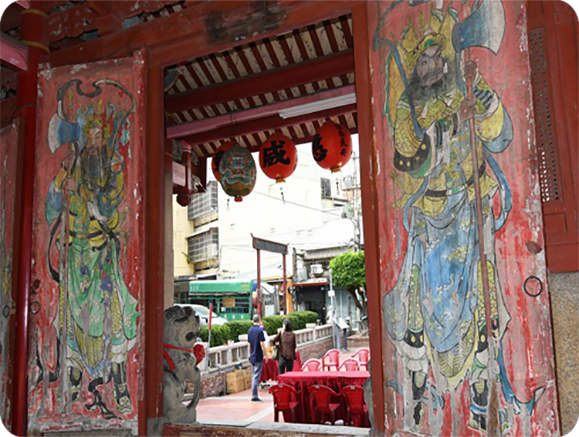雀替
雀替又稱插角，是東亞傳統建築中的特殊構件，指置於梁枋下與立柱相交的短木，可以縮短梁枋得淨跨距離，防止梁枋與立柱之間角度變形。也用在柱間的落掛下，但是為純裝飾性構件。雀替不是插角．插角是閩南匠師習慣的稱法，多數用透雕，直接嵌入柱內，並不承接結構功能．而雀替是北方宮殿式建築的作法，不會做成鏤空透雕，安裝時由柱挖洞，從上方嵌入固定，可承接樑枋，具有穩定結構的功能．雖然二者在位置相同，但其功能目的並不一樣。中國的雀替有七類 分別為大雀替、龍門雀替、雀替、小雀替、通雀替、騎馬雀替、花牙子。
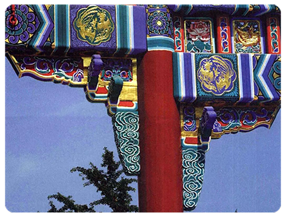 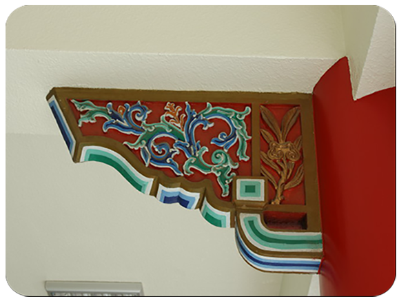瓜筒
瓜筒指的是傳統建築通樑上的一項垂直構件，位置在於通樑之上或通樑與通樑之間。 定義為乘載屋頂、屋面的重量卻又不接地之短柱，功能為傳遞通樑間的重量並且形成加強穩定的作用。臺灣瓜筒帶有大陸原鄉漳、泉、潮、汕風格，更加上在臺灣受本土自然環境、人文條件影響形成臺灣特有的藝術特色。而其歷史的演變以功能型來探討可能最早是由宋代侏儒柱轉變而來。從外型來看，瓜筒可追溯至宋式瓜楞柱。瓜楞柱又名脊瓜柱，柱以八個圓弧形相連，形似瓜瓣。其定義為於平樑之上載托脊檁。瓜筒在傳統宗教建築中扮演著輔助穩定的作用，不管在功能上及造型上都有其特殊的意涵以及視覺美感，其裝飾紋樣的內涵背後隱藏的許多故事、想像。結合各派匠師的巧思及各種別具意義吉祥的圖樣、裝飾而我們對瓜筒的認識除了其構造上及功能上的意義之外，了解其隱含人民對於社會對於心理的期望的投射，其背後代表的民間信仰、文化背景更是相當重要的無形資產，而傳統建築以及其中各種構件隨著時間的推移，不只在物件上保留逐漸困難，其背後隱含的特殊意義、期望的投射也很需要保留研究而流傳下去。
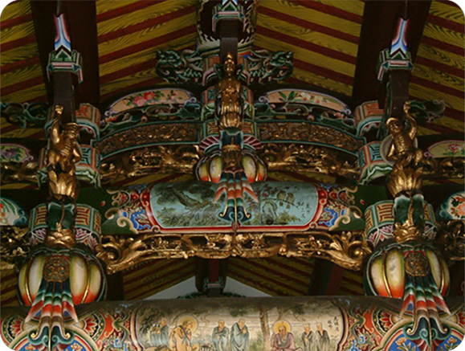 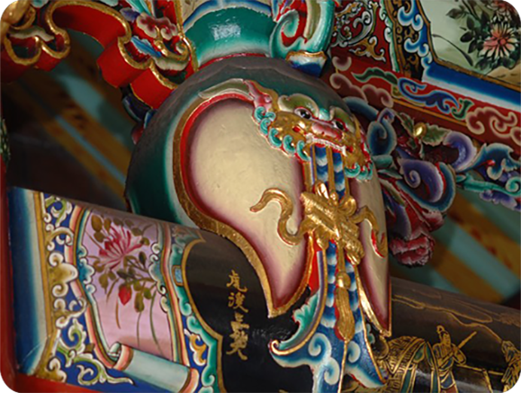斗拱
「斗拱」是中國傳統建築的一個複雜的構件組，是由「斗」跟「拱」兩個部分構成。簡單的說「斗」一個方塊木，「拱」是略成彎曲的橫木，此兩者以榫頭相接，成一個構件稱為「斗拱」，「斗拱」的功用主要是支撐屋簷及樑柱。「斗拱」可以一組單獨存在，也可以多組組合，拱從柱子伸出，末端接連斗，斗上又接住拱，這樣逐層縱橫交錯層層往上疊升，形成上大下小的托架，頂住屋頂，如此一來就形成可以承受更大力的結構。「斗栱」這個構件組的使用在秦漢時就已經發展成熟，最初單獨放置於柱上或挑樑外端﹐作為傳遞樑的荷載於柱身和支承屋簷重量以增加屋簷深度的作用。唐宋時，它同樑、枋結合為一體，除原來承重的功能外，還成為保持木構架整體性的結構層的一部分。明清以後，斗栱的結構作用蛻化，成了在柱網和屋頂構架間主要起裝飾作用的構件。「斗」的形狀，原先是方形的方斗，後來演變成圓斗、六角斗、八角斗、碗形、菱花形梅花型斗等，而「拱」具有結構上承重的功能，所以一般都採取表面雕刻或淺叼的方式，有雕成草花或螭虎，造型有蓮花斗、桃彎斗、八角斗、草尾栱、葫蘆平栱、關刀栱與最花俏的螭龍栱等。「斗拱」普遍存在台灣各傳統廟宇，花樣繁多，還有些大型的廟宇會製作一整面牆的斗拱排列，則稱為「網目」。下次到廟宇參拜時，別忘了抬頭看看屋簷的斗拱，你將會發現他建築力學的應用及雕刻的美。
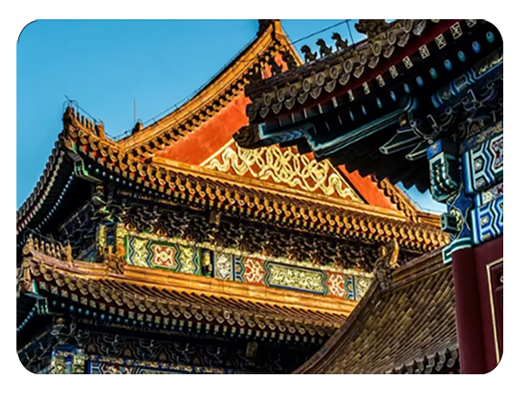 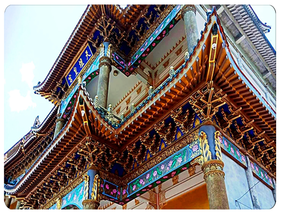藻井
「藻井」是中國建築裡特有的天花板結構及裝飾手法，通常選在天花板最顯眼的位置，由四周不斷向中心懸挑內縮的斗拱，交織成網狀的傘蓋形頂棚，由下往上看，深邃如井，所以稱為「藻井」。藻井的樣子很像蜘蛛網，所以又叫做「蜘蛛結網」。另外因為藻井最中心的地方是一個八角形或近於圓形被稱為「頂心明鏡」，而「頂心明鏡」常有龍形的彩繪，所以又叫做「龍井」。藻井最早的功用是支撐天窗，後來演變成匠師競技的場所，也結構變的越來越複雜越來越炫麗。依藻井的外型和網目結構不同有八卦形、圓形、橢圓形、方形、六角形或內圓外八卦、內八卦外圓等等。藻井的作法以台北孔廟正殿為例，先將二十四支斗拱堆疊在四周，慢慢往上縮小堆疊，四層後縮為十六支斗拱，再繼續層層向中心集中，形成藻井，網心以蓮花收尾，下層斗拱間加雕花板裝飾及支撐結構。有的在向上堆疊時一邊做旋轉，就形成了螺旋狀藻井，三峽祖師廟的藻井就是這種方式的精彩代表作，另外祖師廟的藻井的獅座，獅子脖子上的鍊子是以整塊木雕成，獅球為雙層鏤空雕刻，非常精美。據說藻井的由來是，有一天明太祖朱元璋為了躲避陳有諒的追兵，走投無路情急之下躲進一個破山神廟的供桌底下，以破舊的桌巾遮蔽，心裡默默求神明保佑，此時山神變出一張完整的蜘蛛網將朱元璋藏身的破桌巾隙縫緊緊網住。等到追兵追到，見四下無人，蜘蛛網完整，認為朱元璋不可能躲在這裡，於是沒有多搜索就離開，朱元璋保住一條命。等到朱元璋當黃第十位了謝謝神明的保佑，所以就命令建築工匠，按照蜘蛛網的形狀在大殿室內建造出「藻井」，一來當作幸運符繼續求保護，一來表示永遠的感念神恩。雖然是一則未經證實的傳說，不過為為美麗的藻井加上神秘有趣的色彩。
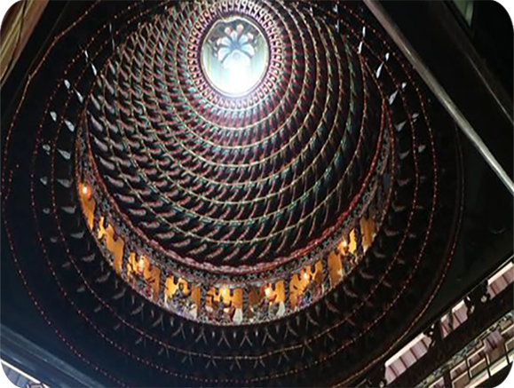 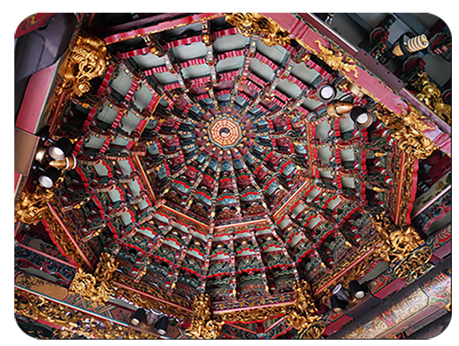龍柱
龍柱又稱「蟒柱」或「蟠龍柱」，指的是未升天的龍，設置在廟宇建築中，除了是歡迎訪客的象徵，也是用來支撐建築物的重量的柱子，通常是石柱。位置會在三川殿外和正殿，而三川殿通常整面牆和柱子，從上至下都會布滿著精緻的石雕，十分壯觀。被中國人封為至高的神獸，是四靈之首。中國歷代的皇帝，皆自稱為龍的化身，從元朝後便規定，只有皇帝才可使用五爪金龍的圖樣，而民間的寺廟只能用三爪或四爪的龍，稱為「蟒」。所以廟裡的龍柱，其實應該稱為「蟒柱」，只是大家都還是習慣稱它為「龍柱」比較順口。龍柱上通常是一隻龍，身體會纏繞柱子一圈，頭在下面，尾巴在上面；而比較近代的廟宇，才會在一根柱子上雕兩隻龍，龍身也會比較瘦，稱為「天翻地覆」法。台灣從早期到現今，每一對龍柱的造型都不同，不僅豐富了台灣龍柱的面貌，也造就了許多觀光和藝術價值。
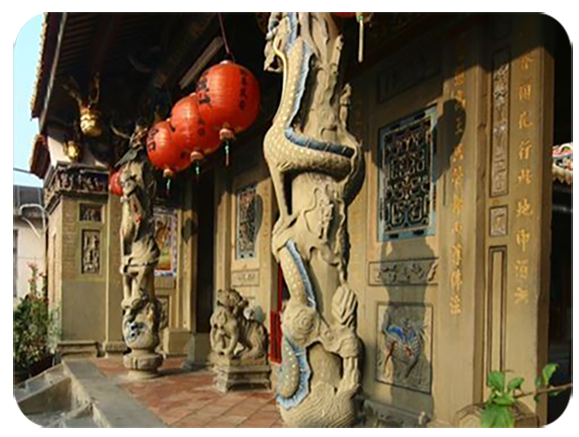 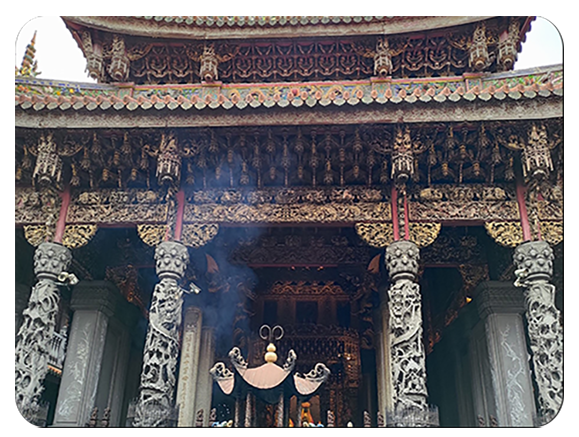